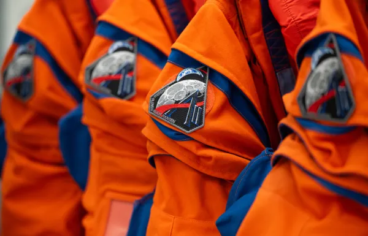
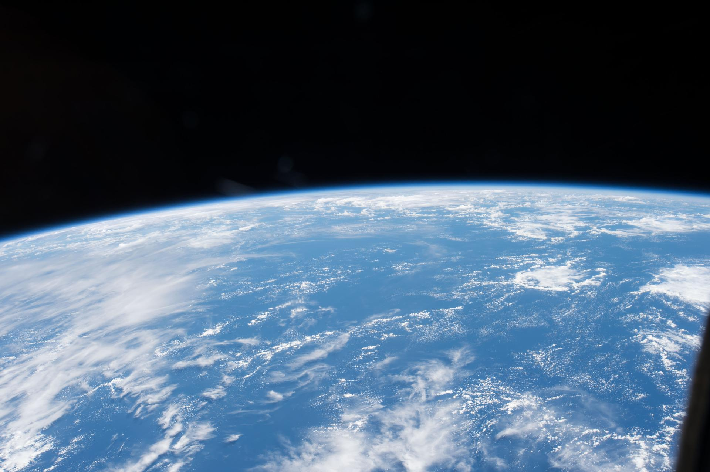
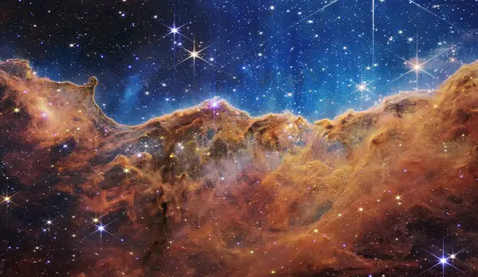
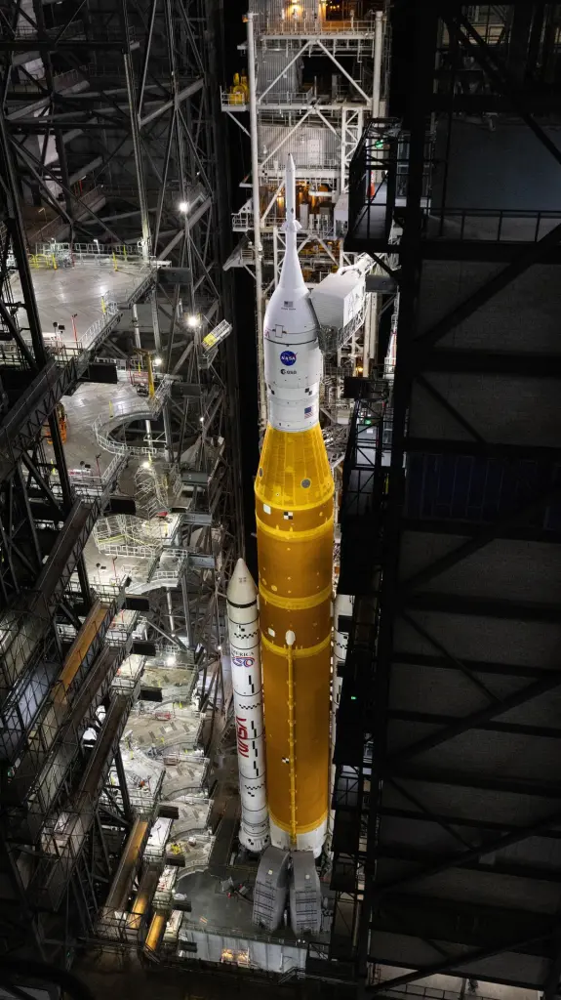
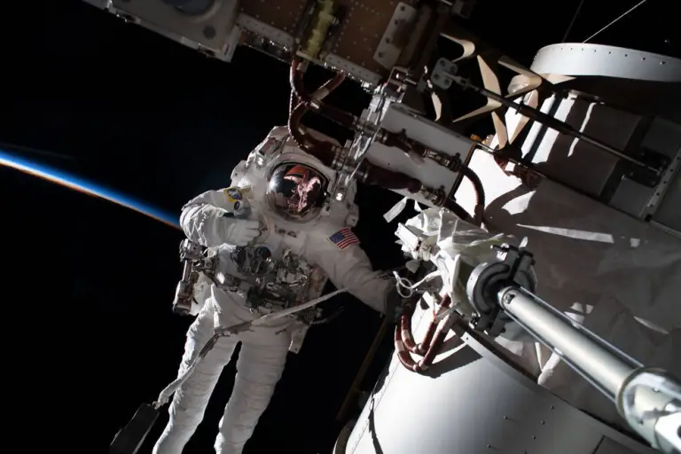
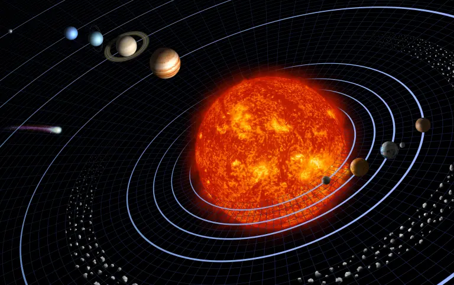

Agenda diaria de la misión a la Luna de Artemis II de la NASA
15 min readUnos ocho minutos después del despegue de Artemis II, la nave espacial Orion y su...

Para todos
La ciencia es la clave para descubrir los secretos del universo: uniendo a la humanidad con cada descubrimiento, expandiendo nuestro conocimiento y despertando nuestra imaginación. Al navegar por las arenas del tiempo y el espacio, la ciencia da contexto y significado a mediciones grandes y pequeñas. ¿Sabías que existen tantas estrellas en el universo como hay granos de arena en la Tierra? La nueva era de los descubrimientos científicos de la NASA acaba de comenzar, ¡y tú eres parte de ella!
Lee más →
Recibe las últimas noticias y actualizaciones de la NASA en español.

Unos ocho minutos después del despegue de Artemis II, la nave espacial Orion y su...

Nota del editor: Esta nota se actualizó el 10 de marzo de 2026 para reflejar los participantes más recientes en...

A fin de lograr el objetivo nacional de llevar astronautas estadounidenses a la superficie de...

El astronauta de la NASA Frank Rubio, que batió récords, ofrece el primer recorrido en video en español de la agencia por el hogar de la humanidad en el espacio –la Estación Espacial Internacional.
Míralo en NASA+ →Espacio a Tierra, la versión en español de las cápsulas Space to Ground de la NASA, te informa semanalmente de lo que está sucediendo en la Estación Espacial Internacional.

Recibe en tu buzón de correo electrónico nuestro boletín semanal para no perderte ninguno de nuestros avances en la exploración del espacio y la Tierra.
Apúntate →